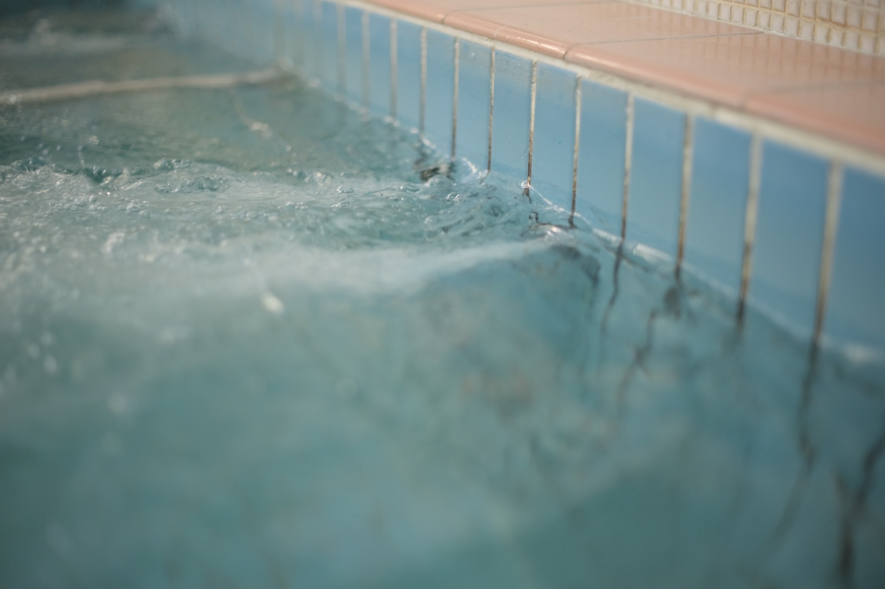

About
Yu-en is a practice rooted in architectural design — weaving connections between people, places, and materials across architecture, furniture, products, and creative content.
A place grows slowly through use, care, and the presence of those who pass through it. Like water circulating and steam rising, spaces, people, and time become quietly intertwined — and a landscape particular to that place begins to emerge. This sense of circulation and stewardship sits at the heart of our work, moving across architecture, products, and workshops to create environments where people can unwind, gather, and cultivate a sense of belonging.

Yu-en's activities are centered on architecture, while weaving together space, objects, people, and memory so that new projects arise naturally from daily life.
01
New construction and renovation of homes, shops, and community spaces. We design not for the moment of completion, but for places that grow over time through use and care—offering open spatial frameworks that residents can inhabit and maintain in their own way.
02
A product brand that recycles timber, tiles, and fittings from demolished sento bathhouses into everyday objects. Combining handcraft with digital fabrication, Karan Products carries the layered time of its source materials into tools for contemporary living. See the Karan Products site.
03
Programs and workshops through which new relationships between people and place can emerge. Drawing on two years of community practice at Kosugiyu-Tonari, Yu-en understands the stewardship and operation of a place as design in itself—not just the building, but the ongoing life it holds.
04
Research, essays, and presentations on sento culture, water and architecture, and circular ways of living. Published research at the Architectural Institute of Japan (2023). Master's thesis: "Movable Minimal Space with Water Circulation Panels" (Nihon University, 2026).
Ayato Hokkyo
Architect / Product Designer
Award & Publication